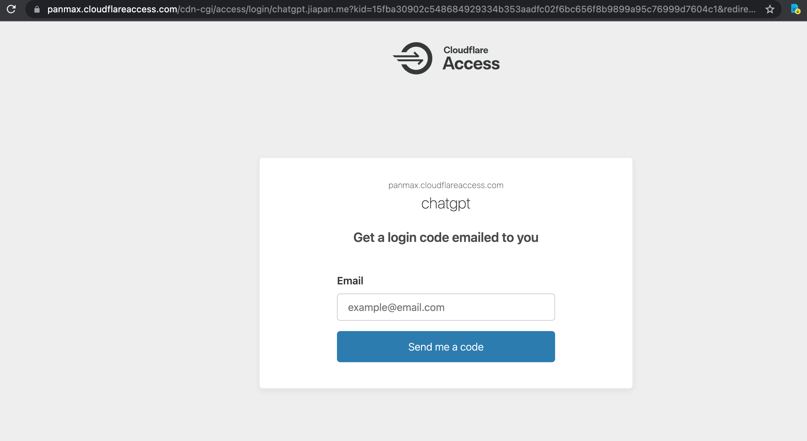

我经常在 VPS 上搭建一些小应用，很多应用是为了方便自己，并没有打算公开使用。
比如最近我打了一个 ChatGPT 的服务，自己用起来非常方便。但是有个问题是这个服务默认不支持用户登录认证，在启动时配置了 openai 的 key 后，就可以直接使用了。
我之前的做法是使用 Nginx 的 Auth 功能来实现，配置起来比较麻烦。它使用静态的用户名和密码，使用起来也不够优雅。
我这里的需求是，不需要获取具体的用户信息，只要确认这个人是经过我的同意的，就可以访问我的Web 页面。
我一直认为 Cloudflare 会提供这样的通用功能，但之前没有找到。今天我看了一篇文章：https://dmesg.app/zero-trust-access-web.html，突然意识到原来 Cloudflare Zero Trust 就是我一直在找的功能。
经过几步，我已经成功地为我的站点添加了邮箱验证码授权功能。
第一步添加应用
因为我要保护的服务是已经在自己服务器上部署好的，所以这里选择 Self-hosted。
第二步配置应用
想要在站点上使用Cloudflare Zero Trust，前提是域名已经接入 Cloudflare DNS。
如下图，我配置了一个 chatgpt 服务，要保护的域名是 chatgpt.jiapan.me，认证后过期时间为1个月：
第三步配置策略
如下图所示，我配置了一个允许策略，过期时间与上一步配置的应用 session 保持一致。
认证规则使用邮箱，要求邮箱后缀为 @jiapan.me
剩下的就保持默认，一直下一步就行了。
测试
现在当我再打开 https://chatgpt.jiapan.me 时，会被重定向到 Cloudflare 的认证页面。需要输入一个邮箱地址：

如果输入的不是以 @jiapan.me 结尾的邮箱，也不会报错，会正常进入到输入验证码页面，但实际上收不到验证码邮件。这一步 Cloudflare 做得很好，不会让不法分子破解出具体能用什么样的邮箱可以收到验证码。
输入以 @jiapan.me 结尾的邮箱后，就可以正常收到邮件了。
当我们将验证码输入到 Code 框中后，就可以正常访问我们的服务了。
当然，也不是必须有自己独立的邮箱，Cloudflare Zero Trust也支持完整的邮箱地址匹配。比如，通过下面的方式，我补充了一个可以通过 jiapan@163.com 接收Code的规则：
现在，我不仅可以保证自己的服务不被未经授权的人访问，而且不需要自己去维护和管理用户认证信息。Cloudflare Zero Trust 还支持多种认证方式，比如 OAuth2，LDAP，JWT 等等，可以根据自己的需求选择合适的认证方式。(这一段是 ChatGPT 写的)